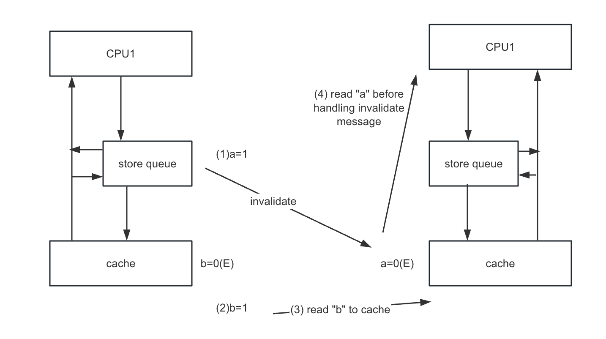
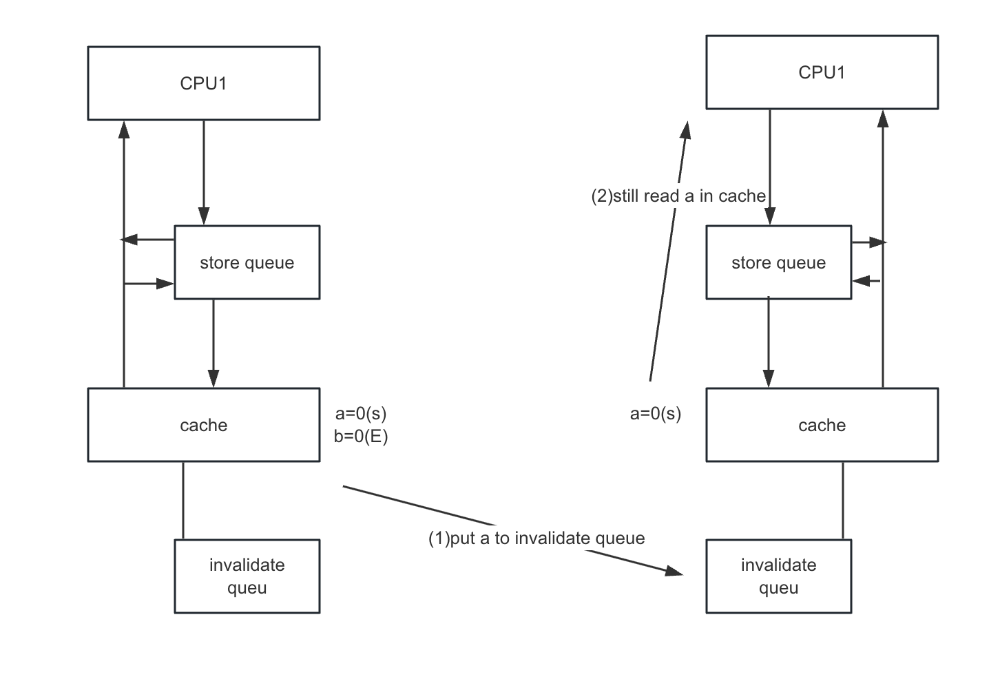

mesi-summary
store buffer
why?
When a CPU wants to modify data (not in the “Modified” or “Exclusive” state), it will always update the data regardless of the responses from other CPUs.
Thus, the data is immediately updated in the store buffer.
complexity it introduces
-
Multilayer caches (reason for write memory barrier):
- Example: Consider a CPU storing two values (A and B) sequentially, where A is in the store buffer and B is in the cache. It is uncertain whether another CPU will observe the updated A before observing B, as it depends on whether the invalidate message for A is received before the request for B.
- Reason: Broadcasting later changes (in the cache) before earlier changes (in the store buffer) are visible to others.
-
Write memory barrier: CPUs must wait until the store buffer is cleared before applying subsequent changes. Alternatively, later changes can remain in the store buffer until all prior entries in the store buffer have been processed.

invalidate queue
why?
When an invalidate message is received, the cache line may be busy, causing delayed acknowledgments.
To address this, the invalidate message is stored in the invalidate queue and processed later.
complexity it introduces
Read memory barrier: All invalidate messages must be processed before reading subsequent values.

summary
Summary Chart
| Component | Reason | Complexity Introduced |
|---|---|---|
| Store Buffer | CPU updates data immediately in the store buffer regardless of responses from other CPUs. | 1. Multilayer caches caused by uncertainty in update visibility2. Write memory barrier needed |
| Invalidate Queue | Cache line may be busy, delaying acknowledgment of invalidate messages. | Read memory barrier required - all invalidate messages must be processed before reading |